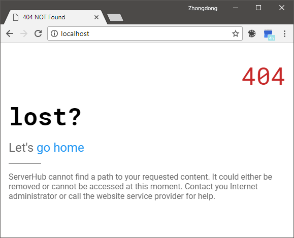

快速上手 ServerHub 的 helloworld 例子
这一章，我们会通过一个基于 ServerHub 的 helloworld 静态服务器程序来带你直观感受 ServerHub。阅读过后，欢迎你在 issues 中提意见或者在 pr 中提交合并请求。
配置工作目录
在本例中，我建议你将自己的工作目录清理得越干净越好。或者你可以直接创建一个全新的目录来作为项目空间。
mkdir serverhub-helloworld && cd serverhub-helloworld现在，用 npm 来初始化空间。
npm init或者，你可以在 npm init 后面加上 -y 参数从而跳过提示问题。
安装 ServerHub
为了能够安装和运行 ServerHub，你 必须 要在本机安装好 Node.js。在安装过程中，npm 也会自动被安装。
进行下一步之前，我需要着重强调：如果你不打算阅读或使用源代码，就一定不要通过 clone GitHub 仓库的方式来安装（因为这样你会缺少几个重要的依赖项，还需要费神自行安装，完全没有必要这样做）。正确的方法是使用 npm。
npm install --save serverhub-mvc妥了！现在 ServerHub 已经被安装到了你的工作目录。
经过上面的步骤，你的工作空间应该像下面这样：
- serverhub-helloworld/
- node_modules/
- app.js // entry of server
- package-lock.json
- package.json
编辑
app.js
首先，请在其中引入 ServerHub 依赖。然后调用
Run() 方法来配置 ServerHub。
修改后的代码应该如下面所示：
const serverhub = require('serverhub-mvc');
serverhub.Run({
BaseDir: __dirname
});现在，执行 node app.js 来启动 ServerHub，然后到你最常用的浏览器访问“http://localhost:926”。如果一切正常，你会看到一个写着 404 错误的页面。

干得好！现在你的 ServerHub 实例已经可以正常工作了！
对上例的拓展
上面的段落中，我们成功启动了一个 ServerHub 服务器实例，但是它只显示了一个 404 错误页。我们肯定不会希望它这样子，所以跟我进行一些改动。在本小节，我们要深入一些看看如何使用 ServerHub 的 controller。
你的第一个 controller
默认情况下，ServerHub 在编译时（参阅 controller 文档）会将与 app.js 同在一处的“controller/”目录作为搜寻 controller 的目录。所以我们需要创建这样一个文件夹，然后添加并编辑 home.js。不要担心，这个 controller 目录是可以自己设置的，以后就会了解到了。
该文件的内容如下：
return {
index: function (req, res, method) {
res.write('Hello ServerHub');
res.end();
}
}下面重启 ServerHub，并刷新浏览器页面

诶！？！？有没有感到一丢丢奇怪？为什么会出现这样一个页面？我们完全没有改变过浏览器访问的网址呀！
哈哈，这就是 ServerHub 的工作了。此时此刻，此情此景，ServerHub route 会默认匹配 home controller 中的 index 动作方法，然后触发它，接着把操作的结果返回给浏览器。你自己也可以试着改变 home.js 的内容，看看有什么变化。而在此情境中，浏览器的 URL“/”等价于“/home/index/”。看到没有，controller 和 route 就是那么赞👍！
结语
我们一起试着去了解怎样搭建一个 ServerHub 应用程序，你学会如何做了嘛？
更多指南和文档，请访问ServerHub 文档集。
本章贡献
雨杨 他首先提出了为 ServerHub 文档增加一个 helloworld 案例的想法，非常感谢！